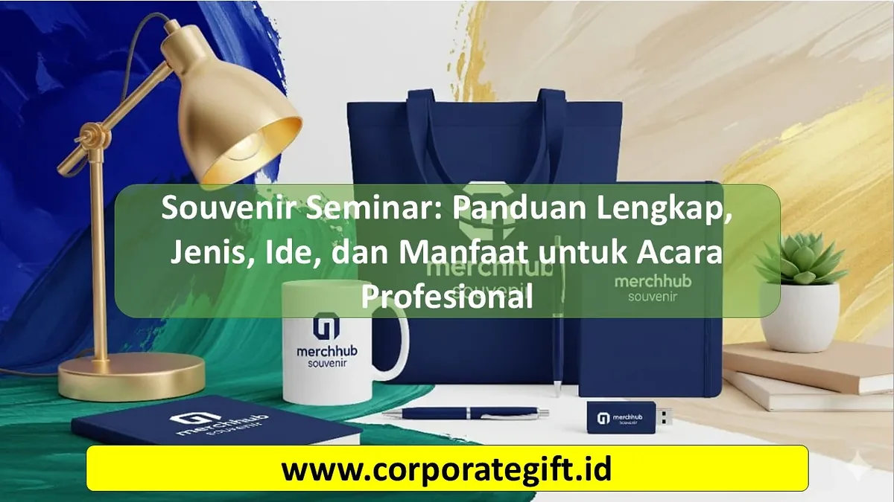

Seminar, workshop, maupun konferensi profesional kini tidak hanya berfokus pada materi yang disampaikan, tetapi juga pada pengalaman peserta secara keseluruhan. Salah satu elemen penting yang sering menjadi perhatian adalah souvenir seminar.
Bagi perusahaan atau penyelenggara acara, souvenir bukan sekadar bonus, melainkan bentuk apresiasi yang mampu meninggalkan kesan positif. Bahkan, jika dipilih dengan tepat, souvenir bisa menjadi media promosi yang efektif.
Mengapa Souvenir Seminar Penting?
- Memberi Nilai Tambah pada Acara
Souvenir yang bermanfaat membuat peserta merasa lebih dihargai. Ini meningkatkan pengalaman keseluruhan dan memperkuat citra positif penyelenggara. - Media Branding
Dengan mencetak logo atau nama perusahaan di souvenir, brand akan terus terlihat setiap kali barang tersebut digunakan. - Kenangan dari Acara
Souvenir seminar berfungsi sebagai pengingat, bahkan setelah acara selesai. Peserta akan lebih mudah mengingat perusahaan atau organisasi yang menyelenggarakan acara tersebut.
Jenis-Jenis Souvenir Seminar yang Populer
1. Souvenir Fungsional
- Tumbler atau Botol Minum: mendukung gaya hidup sehat dan ramah lingkungan.
- Tas Seminar (Totebag atau Backpack): praktis dan selalu terpakai.
- Alat Tulis Premium: seperti pulpen logam atau notebook custom.
2. Souvenir Teknologi
- USB Flashdisk: masih relevan untuk menyimpan materi seminar.
- Powerbank: sangat berguna di era digital.
- Wireless Charger: modern dan elegan.
3. Souvenir Eco-Friendly
- Sedotan Stainless Steel: simbol kepedulian terhadap lingkungan.
- Alat Makan Portable: cocok untuk pekerja dan traveler.
- Notebook Daur Ulang: ramah lingkungan sekaligus fungsional.

Ilustrasi Souvenir Seminar: Panduan Lengkap, Jenis, Ide, dan Manfaat untuk Acara Profesional.
Ide Kreatif Penggunaan Souvenir Seminar
- Branding dengan Desain Eksklusif
Souvenir dengan desain khusus sesuai tema acara akan lebih memorable. Misalnya seminar tentang digital marketing bisa memberikan flashdisk berisi e-book materi. - Souvenir Berbasis Personal Branding
Sertakan nama peserta atau tagline acara pada souvenir. Ini membuat barang tersebut terasa lebih personal dan bernilai. - Paket Souvenir Seminar
Alih-alih memberikan satu item, penyelenggara bisa membuat paket seminar kit berisi tas, tumbler, pulpen, dan buku catatan. Paket ini menambah kesan profesional.
Manfaat Souvenir Seminar untuk Perusahaan
1. Meningkatkan Engagement Peserta
Souvenir yang menarik membuat peserta lebih antusias dan memiliki pengalaman positif.
2. Membangun Brand Awareness
Peserta yang menggunakan souvenir di kehidupan sehari-hari tanpa sadar membantu mempromosikan brand.
3. Relasi Bisnis Lebih Erat
Hadiah kecil bisa menjadi jembatan untuk menjalin hubungan yang lebih baik dengan peserta maupun mitra bisnis.
4. Citra Profesional
Souvenir yang dipilih dengan tepat mencerminkan profesionalisme dan keseriusan penyelenggara dalam mengelola acara.
Tips Memilih Souvenir Seminar
- Sesuaikan dengan Profil Peserta
Kenali audiens seminar. Untuk mahasiswa, souvenir fungsional seperti buku catatan lebih cocok. Untuk eksekutif, pilih powerbank atau tumbler premium. - Pilih Souvenir yang Bermanfaat
Barang yang berguna sehari-hari akan lebih sering dipakai sehingga branding lebih efektif. - Sesuaikan dengan Budget
Tidak perlu mahal, tapi pastikan kualitas terjaga agar tidak menurunkan citra perusahaan. - Gunakan Vendor Terpercaya
Vendor profesional bisa membantu memastikan kualitas produk dan hasil printing logo sesuai standar.
Kesimpulan
Souvenir seminar adalah elemen penting yang sering kali menentukan kesan akhir sebuah acara. Lebih dari sekadar hadiah, souvenir bisa menjadi media promosi, kenangan berharga, sekaligus alat memperkuat hubungan dengan peserta.
Dengan memilih jenis souvenir yang tepat, menyesuaikan desain dengan identitas acara, serta bekerja sama dengan vendor profesional, perusahaan bisa mendapatkan nilai promosi jangka panjang dari setiap item yang dibagikan.